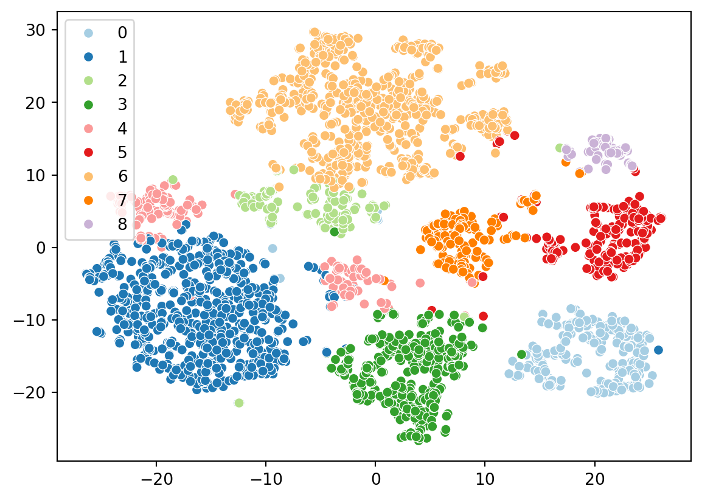

Tutorial 2: Access single-cell datasets from scRNAseq collection and annotate cell types
Welcome to this tutorial on annotating single-cell datasets with reference collections. The scRNAseq (R/Bioc, Python) package provides access to public single-cell RNA-seq datasets for use by other Bioconductor/BiocPy packages and workflows. These datasets are stored in language-agnostic representations described in ArtifactDB, enabling easy access to datasets and analysis results across multiple programming languages such as R and Python. We will showcase how to integrate and process single-cell datasets across languages, such as R and Python, and how to annotate cell types using reference datasets.
Outline
In this tutorial, we’ll walk through how to:
Explore the scrnaseq package and access public single-cell RNA-seq datasets.
Perform basic operations on SingleCellExperiment objects, the core data structure for single-cell data.
Annotate cell types using reference datasets from the celldex package.
Prerequisites
Before we begin, please ensure that you have the following prerequisites installed:
Python 3.8 or later with dependencies listed here.
Let’s explore the scrnaseq package and learn how to access public single-cell RNA-seq datasets. Datasets published to the scrnaseq package are decorated with metadata such as the study title, species, number of cells, etc., to facilitate discovery. Let’s see how we can list and search for datasets.
1.1 List all datasets
The list_datasets() function in Python or surveyDatasets() in R will display all available datasets published to the scRNAseq collection along with their metadata. To list all available datasets in the scrnaseq package and displays their names, titles, and versions:
You can also search for datasets based on metadata using search_datasets() in Python or searchDatasets() in R. This supports both simple text queries and complex boolean expressions.
Let’s search for datasets containing the term “pancreas” and displays their names, titles, and versions.
For more complex searches involving boolean operations, use define_text_query() in Python or defineTextQuery() in R. Here’s an example to find datasets using the mouse reference genome (GRCm38) and containing the words neuro or pancrea.
Tip
Check out the reference manual for more details and usage of these functions.
This performs a complex search to find datasets tagged as “mouse” in the reference genome field and containing the keywords “neuro” or “pancrea”.
Important
Once a dataset is identified, always list the name and version of the dataset in your scripts for reproducibility.
2. Download dataset
After identifying a dataset of interest, use fetch_dataset() in Python or fetchDataset() in R to download the dataset. This will load the dataset as a SingleCellExperiment object.
Note
R/Bioconductor users might already be familiar with the SingleCellExperiment class. BiocPy also provides similar implementation in the singlecellexperiment package.
For this tutorial, let’s download the zeisel-brain dataset:
The Python implementation of the SingleCellExperiment class adheres to Bioconductor’s specification and offers similar interface and methods. Our goal is to make it simple for analysts to switch between R and Python.
This Python code demonstrates basic operations on a SingleCellExperiment object, including retrieving assay names, column names, column metadata, accessing counts, and coercing to an AnnData object for interoperability with existing analysis ready eco-systems in Python.
The package uses delayed arrays (similar to the R/Bioconductor’s DelayedArray), to load file-backed arrays and matrices. This reduces memory usage when loading large datasets. Methods are available to coerce delayed arrays to sparse matrix representations from the scipy package:
We can now annotate cell types by using reference datasets and matching cells based on their expression profiles. In this tutorial, we will use SingleR in R or its Python equivalent singler.
Before running the singler algorithm, we need to download an appropriate reference dataset from the celldex package.
3.1 Access reference datasets from celldex
Similar to the scRNAseq package, the celldex package provides access to the collection of reference expression datasets with curated cell type labels, for use in procedures like automated annotation of single-cell data or deconvolution of bulk RNA-seq to reference datasets. These datasets are also stored in language-agnostic representations for use in downstream analyses.
For this tutorial, let’s download the Mouse RNA-seq reference from celldex using fetch_reference() in Python or fetchReference() in R. This reference consists of a collection of mouse bulk RNA-seq data sets downloaded from the gene expression omnibus (Benayoun et al. 2019). A variety of cell types are available, again mostly from blood but also covering several other tissues.
/opt/hostedtoolcache/Python/3.11.9/x64/lib/python3.11/site-packages/biocframe/BiocFrame.py:591: UserWarning: Setting property 'metadata' is an in-place operation, use 'set_metadata' instead
warn(
Give this is a brain dataset, the presence of neuron’s and other brain-related cell types makes sense.
4. Analyze single-cell RNA-seq datasets
single-cell-methods
Aaron has implemented the single-cell methods from scran in C++. This allows us to reuse the same implementation in JS and develop applications for analyzing single-cell data (Kana), or in Python through the scranpy package.
To analyze the dataset using the default parameters:
4.1 Want to know whats happening in the entire analysis
Running the analyze_sce() function uses the default parameters to run the single-cell workflow. If you want to customize or want to have fine-grained control on the analysis steps, set the parameter dry_run=True.
Note
This prints out the exact series of steps the function runs under the hood to perform the analysis. You can then use this to customize the analysis to your specific dataset or use case.
Users can also run individual steps from the analysis without having to perform the full analysis, e.g. compute log-normalized counts or find markers.
5. Visualize Results
I can’t have a tutorial without a section on visualization or figures.
We will use the seaborn and matplotlib packages in Python to create visualizations. We’ll plot the t-SNE embedding and color the cells by their cluster assignments.
import seaborn as snssns.scatterplot( x=results.tsne.x, y=results.tsne.y, hue=results.clusters, palette="Paired")

Now’s lets color the embedding with the cell types we identified from celldex. We ran the singleR algorithm on the full datasets, but scranpy filtered a few cells during the QC step. Lets identify which cells were kept.
Congratulations! You have now completed the tutorial on accessing single-cell datasets using scRNAseq and ArtifactDB, and annotating cell types using reference datasets from celldex. For more detailed usage and advanced analyses, refer to the respective documentation of these packages.